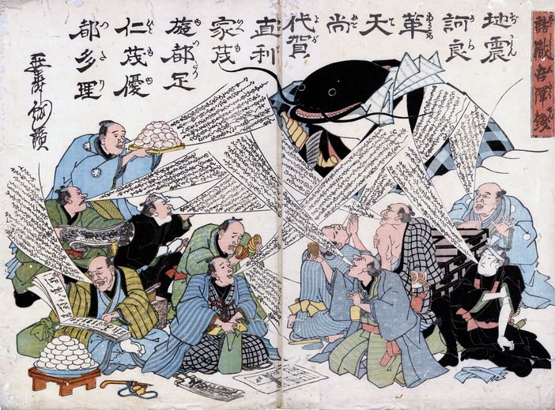

← 图鉴索引

地震で大儲けした商人たちが、更なる儲けを巨大な鯰に祈っている。
著作者：延寿／出典：親書誌：U426_nichibunken_0221：諸職吾澤銭；ショショクゴタクセン／日付：2010／資源識別子：U426_nichibunken_0221_0001_0000
Copyright (c)2010- International Research Center for Japanese Studies, Kyoto, Japan. All rights reserved.